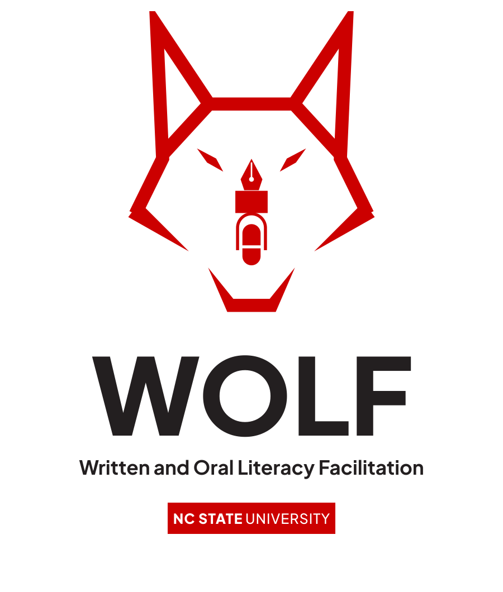

Teaching writing and speaking in every discipline at NC State
The Campus Writing and Speaking Program works with faculty, departments, and colleges on the writing and speaking their students do. Start from the work in front of you.
CWSP is part of the Office for Faculty Excellence. See CWSP on the OFE site
What are you working on?
-

One course I teach
C²TC, the Communication Teaching Certificate
Free, self-paced certificates in written, digital, and oral communication instruction, each 19 to 28 hours, ending in a capstone you design for a course you teach.
Explore C²TC -

My department's curriculum
WOLF, Written and Oral Literacy Facilitation
A two-to-three-year partnership that builds writing and speaking into a department, program, or college curriculum, led by up to three faculty liaisons the unit chooses.
Explore WOLF -
AI in a course, program, or department
AI Literacies and the AI Policy Lab
A three-level framework, a faculty workbook, a policy workshop, and the AI Practice Adventure, for deciding where AI belongs in your teaching and putting the decision in writing.
Explore the AI programs -
A session or time to write
Events and writing challenges
Wednesday sessions, Faculty Conversations, and writing challenges, open to everyone who teaches, with no certificate or partnership required.
See upcoming events
Upcoming CWSP events
Every session meets in Primrose 101 and on Zoom, and every one is open to NC State instructional faculty and graduate students who teach.
Research and presentations
The scholarship behind the programs, from the three-level AI literacy framework to the governance documents read in The Glitch Curriculum.
Not sure where to start?
Tell CWSP what you teach or what your unit wants to change, and a co-director will write back with a starting point.